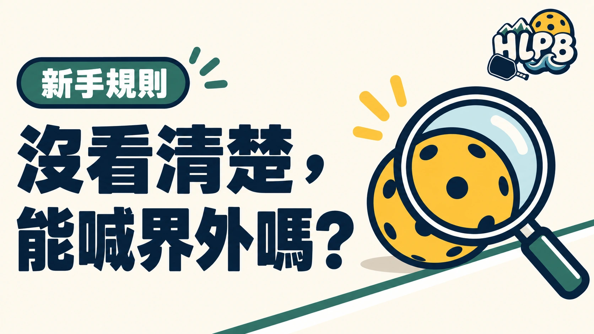

沒有裁判協助判線時，球友需要負責自己這側的落點判定。只有清楚看見、確定出界，才喊界外。看不清楚時，應把疑問利益留給對手，不要用猜的改變回合結果。
判線時怎麼處理？
| 情況 | 處理重點 |
|---|---|
| 確定看見出界 | 清楚喊出界外 |
| 沒看清楚落點 | 不因懷疑而判界外 |
| 發現搭檔判錯 | 及時更正 |
| 對對手判定有疑問 | 禮貌詢問，避免爭吵 |
在花蓮臨打也一樣，判線的重點是公平，不是喊得比較大聲。有裁判的正式比賽，則依賽事規則與裁判程序處理。
延伸閱讀：壓線算界內嗎？
參考來源
最後查證：2026-10-13｜資料來源：USA Pickleball 官方資料；HLPB 編輯整理
返回文章列表